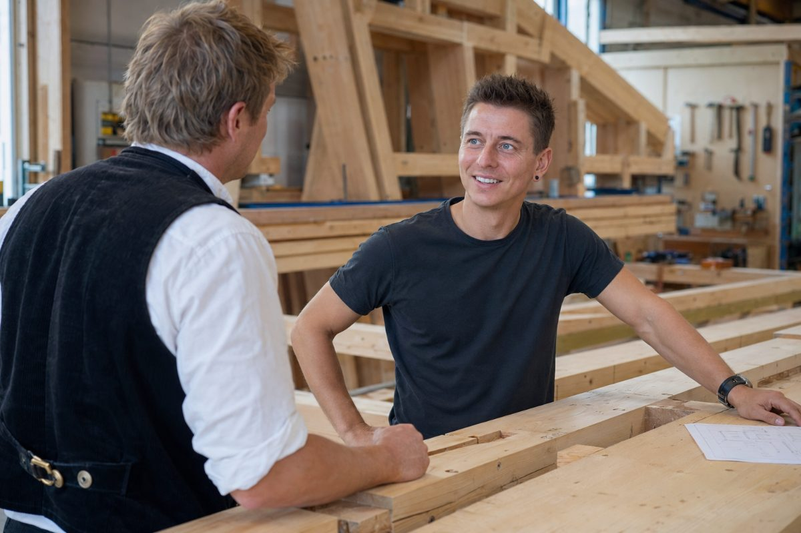
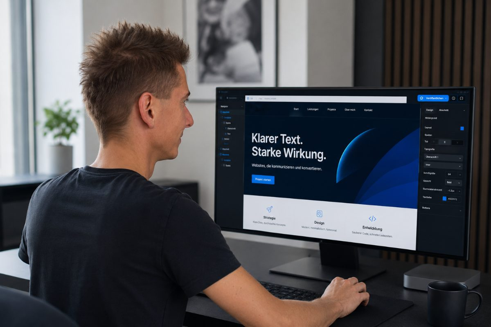

Ihre beste Arbeit sieht niemand
Die Fotos Ihrer besten Projekte liegen auf dem Handy statt da, wo Kunden sie sehen. Genau das, was überzeugen würde, fehlt.
Websites · SEO · Google Ads · Meta Ads
Mehr Sichtbarkeit für Ihren Betrieb
Ich baue Selbstständigen und Betrieben einen Auftritt, der zeigt, was sie wirklich können und sorge dafür, dass man sie findet, über Website, Google und Social Media.
Viele gute Betriebe kennen das. Stark im Job, online abgehängt.
Schuld ist meist einer von diesen drei Gründen.
Die Fotos Ihrer besten Projekte liegen auf dem Handy statt da, wo Kunden sie sehen. Genau das, was überzeugen würde, fehlt.
Vor Jahren mal gebaut, seitdem nicht mehr angefasst. Auf dem Handy kaum lesbar und auf den ersten Blick wirkt Ihr Betrieb viel zu veraltet, was er überhaupt nicht ist.
Wer Sie noch nicht kennt und in der Gegend sucht, findet Sie nicht.
Die Anfrage geht an den mit der besseren Homepage, nicht an den mit der besseren Arbeit.
Praxen und Betreuung als Steckenpferd, Handwerk und Fertigung als Leidenschaft, das sind meine zwei Welten. Und sind Sie in keiner davon zu Hause, bin ich trotzdem offen für Sie. Egal ob Sie noch keine Website haben oder schon online sind und einfach mehr Anfragen wollen.
Segment 01 · Steckenpferd
Selbstständige, bei denen Menschen erst Vertrauen suchen und dann buchen.

Segment 02 · Leidenschaft
Inhabergeführte Werkstätten und Fertiger, deren Projekte mehr hermachen als ihre Website.

Segment 03 · Offen für alles
Aus der Industrie komme ich selbst und bin offen für alles. Sind Sie selbstständig und möchten online besser dastehen, erzählen Sie mir davon.
Erzählen Sie mir davon →Eine schöne Seite allein bringt weder Kunden noch neue Mitarbeiter. Wir gehen das in der richtigen Reihenfolge an, erst gefunden werden, dann überzeugen und Anfragen gewinnen.
Ihre Website
Neu gebaut oder Ihre bestehende Seite überarbeitet, sauber und startklar.
Mehr Reichweite
Sie haben schon eine Website? Dann sorgen wir dafür, dass die richtigen Leute sie sehen.
Jedes Projekt ist individuell. Umfang und Aufwand besprechen wir gemeinsam, ehrlich und unverbindlich.
Kostenloses Erstgespräch →Gelernt habe ich Werkzeugmechaniker, heute bin ich Prozesstechnologe CNC. Meine Bauteile sieht trotzdem niemand, gefertigt auf das µ (Tausendstel Millimeter) genau. Aus präzisen Spritzgusswerkzeugen entstehen Einzelteile für Millionen Schreibgeräte. Fast jeder hält irgendwann eines davon in der Hand, doch das Meisterstück dahinter bleibt meist unsichtbar.
Die andere Hälfte meines Lebens ist das Rote Kreuz, seit dem Jahr 2001. Reingewachsen vom Jugendgruppenkind bis in die Führung, ausgebildet zum Rettungssanitäter und zum Einsatzleiter. Heute leite ich Einsätze meiner Bereitschaft, koordiniere Menschen und Mittel, wenn es drauf ankommt. Ich weiß, wie sich Verantwortung für jemanden anfühlt, der sich auf einen verlässt.
Genau das fällt mir bei vielen guten Betrieben auf, in der Praxis wie in der Werkstatt. Erstklassige Arbeit, die draußen keiner mitbekommt. Den hohen Qualitätsanspruch, den ich aus der Fertigung kenne, bringe ich jetzt mit der Marke LeadAdBee auf die Bildschirme.
Frank Kösling · LeadAdBee
Vier Schritte, kein Fachchinesisch. Sie wissen jederzeit, woran Sie sind.
Wir reden über Sie und Ihre Arbeit und was Sie wirklich brauchen. Kostenlos und unverbindlich.
Ich sage Ihnen ehrlich, was sinnvoll ist. Gemeinsam legen wir fest, wie Ihr Auftritt aussehen soll, dann geht es an die Umsetzung.
Wir feilen gemeinsam, bis es passt. Sie sagen mir, was Sie möchten und ich setze es um.
Erst wenn Sie einverstanden sind, geht Ihre Seite online, vorher auf Handy, Tablet und Computer geprüft, damit überall alles passt.
Damit Sie von Anfang an wissen, woran Sie sind.
Keine Buzzwords, keine Hochglanz-Folien, kein Anzug-Theater.
Kein „garantiert X Prozent mehr“. Ich sage Ihnen, was realistisch geht.
Kein Callcenter, kein wechselnder Ansprechpartner. Sie reden immer mit mir.
Keine Abo-Falle. Faire, klare Konditionen.
Was bleibt, ist eine saubere Seite, die zeigt, was Sie können, über die man Sie findet und Ihnen vertraut. Mehr Show braucht es nicht.
Das hängt ganz von Ihrem Vorhaben ab, deshalb gibt es bei mir keinen Schubladenpreis. Umfang und Aufwand sind bei jedem anders. Im kostenlosen Erstgespräch schauen wir uns Ihren Fall an, danach bekommen Sie ein klares, individuelles Angebot, ehrlich und unverbindlich.
Nein. Sie kaufen ein klares Ergebnis, keine Abo-Falle. Eine laufende Betreuung gibt es nur, wenn Sie sie wollen, und immer zu klaren Konditionen.
Ich arbeite vor allem für Selbstständige aus Gesundheit und Betreuung, fürs Handwerk und für Betriebe aus Metall und Fertigung. Sie finden sich hier nicht wieder? Kein Problem, ich bin für vieles offen. Erzählen Sie mir von Ihrem Vorhaben und ich sage Ihnen ehrlich, ob ich der Richtige für Sie bin.
Nein. Wer das verspricht, flunkert. Ich baue die Grundlage. Man findet Sie und vertraut Ihnen vom ersten Eindruck an, daraus entstehen Anfragen Schritt für Schritt. Das hilft nicht nur bei Kunden, sondern auch bei guten Mitarbeitern. Wer sich bei Ihnen bewerben will, schaut sich vorher Ihre Seite an. Mehr verspreche ich aber nicht, als ich halten kann.
Müssen Sie auch nicht. Am Anfang brauche ich ein bisschen Input von Ihnen, ein paar Eckdaten, vorhandene Fotos und ein kurzes Gespräch darüber, was Sie ausmacht. Das ist im Wesentlichen Ihr Aufwand. Den ganzen Rest kann ich übernehmen, je nachdem, was Sie möchten. Sie bekommen den Entwurf gezeigt und sagen mir, was passt und was nicht. So kostet es Sie wenig Zeit und läuft trotzdem nicht an Ihnen vorbei.
Genau dafür bin ich da. Ich erkläre alles in normaler Sprache und kümmere mich um die Technik und alles rund um Google.
Kein Problem, das klären wir im Erstgespräch. Oft lässt sich mehr machen, als Sie denken. Wenn Sie in meiner Nähe sind, kann ich die Fotos auch selbst machen. Das ist dann eine eigene Leistung, die wir vorher in Ruhe besprechen.
Nein, ich arbeite deutschlandweit. Sind Sie in der Nähe, komme ich gerne persönlich vorbei. Sonst läuft alles per Videocall, Telefon und E-Mail. Wo Sie sitzen, spielt also keine Rolle.
Erzählen Sie mir kurz von sich und Ihrer Arbeit. Ich schaue mir Ihre Situation an und sage Ihnen ehrlich, was sich für Sie lohnt.
Kostenlos und unverbindlich.
Lieber direkt? Schreiben Sie an kontakt@leadadbee.de